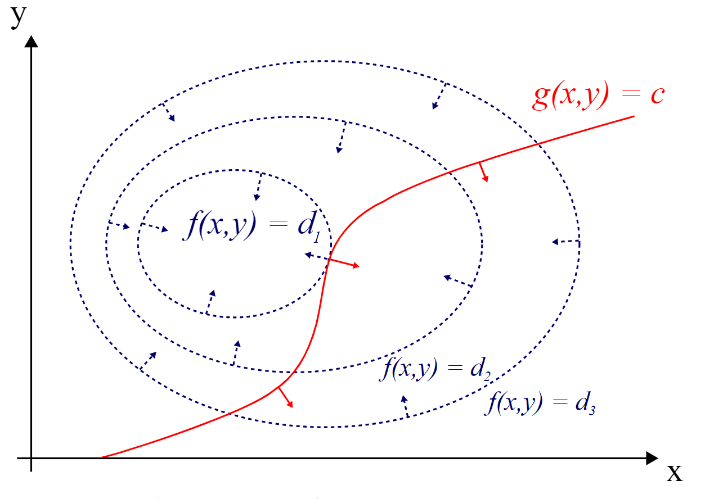
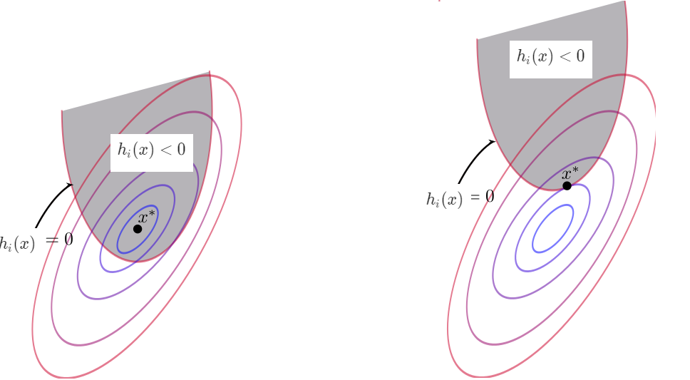

4. extreme values
$\global\def\d{\mathrm{d}} $ $\global\def\p{\partial} $ $\global\def\g{\operatorname{grad}}$
1. 二元函数的极值
(1). 必要条件
$f(x,y)$ 在 $(x_0,y_0)$ 有偏导，且 $f(x_0,y_0)$ 是 $f(x,y)$ 的极值 $\Longleftrightarrow$ $f'_x(x_0,y_0)=0,\ f'_y(x_0,y_0)=0$
此结论反之不成立
- 首先，对于一元函数，导数为 $0$ 未必是极值点
- 然后，二元函数极值的要求更加严格。若点 $P$ 是 $z$ 的极值点，意味着在 $P$ 的任何一个邻域内无论 $(x,y)$ 以哪种方式、哪个方向趋近于 $P$，$P$ 都必须是极值点
e.g. 马鞍面 $z=x^2-y^2$ 在 $(0,0)$ 处 $z'_x=z'_y=0$，但从 $x$ 方向看是极小，从 $y$ 看是极大的
(2). 直观思路
回顾一元函数极值判定:
- $f'(x_0)=0,\enspace f''(x_0)< 0\enspace \Longrightarrow \enspace$ 极大值
- $f'(x_0)=0,\enspace f''(x_0)> 0\enspace \Longrightarrow \enspace$ 极小值
- $f'(x_0)=0,\enspace f''(x_0)= 0\enspace \Longrightarrow \enspace$ 需要进一步讨论
考虑 $(x_0,y_0)$ 处某方向的方向导数的导函数: $\displaystyle\frac{\p^2 f}{\p\bm{l}^2}=\cos\beta^2\left[\left(\frac{\cos\alpha}{\cos\beta}\right)^2f'' _ {xx}+2\frac{\cos\alpha}{\cos\beta}f'' _ {xy}+f'' _ {yy}\right]$
如果 $(x_0,y_0)$ 在每个方向都是极大 (小) 值，就需要判别 $f''^2 _ {xy} -f'' _ {xx}f'' _ {yy}$ 的正负
定理: 设 $z$ 在某邻域内连续，且有一阶及二阶连续偏导数，令 $f'' _ {xx}(x_0,y_0)=A,\ f'' _ {xy}(x_0,y_0)=B,\ f'' _ {yy}(x_0,y_0)=C$，定义它的一阶导数为Jacobian 矩阵 $\displaystyle\def\arraystretch{1.6} J=\begin{bmatrix} \frac{\p f}{\p x} \\ \frac{\p f}{\p y} \end{bmatrix}$, 二阶导数为Hessian 矩阵 $H=\begin{bmatrix} A & B \\ B & C \end{bmatrix}$，然后:
- $J=0,\enspace H$ 负定 $\Longrightarrow$ 极大值 $(A< 0,\ AC-B^2>0)$
- $J=0,\enspace H$ 正定 $\Longrightarrow$ 极小值 $(A>0,\ AC-B^2>0)$
- $J=0,\enspace H$ 半正定或半负定 $\Longrightarrow$ 需要进一步讨论
2. Lagrange Multipliers
(1). 基本推导
定义: 求 $f(x,y)$ 在 $D$ 上满足条件 $g(x,y)=0$ 的极值称之为条件极值
若能从 $g(x,y)=0$ 解出 $y=\phi(x)$，则 $f(x,\phi(x))$ 为无条件极值
若无法解出，先假设 $y=\phi(x)$，寻找求驻点的等价条件:
$ \displaystyle \begin{cases} f'_x+\lambda g'_x=0 \\ f'_y+\lambda g'_y=0 \\ g(x,y)=0 \end{cases} \Longleftrightarrow F(x,y,\lambda)=f(x,y)+\lambda g(x,y) $ 关于 $x,\ y,\ \lambda$ 求导，即转化为对 $F$ 求驻点
原问题通过上述方式转换为关于 $F$ 的无条件极值问题, 方程中的 $\nabla f+\lambda\nabla g=0$ 有如下几何直观:
如果有多个约束 $g_1(x,y)=c_1,\ g_2(x,y)=c_2,\ ...$，这些约束面的交点形成的曲线记为 $G$，且
- 右图为 $f$ 的等值线和 $g$ 的等值线 $g(x,y)=c$ 在 $xOy$ 上的投影。极值点的条件:
- $(x_0,y_0)$ 是极值点 $\Longleftrightarrow$ 在 $(x_0,y_0)$ 处，$g(x,y)=c$ 与 $f(x,y)$ 的某个等值线相切。
- 这是因为，相切意味着与梯度垂直，在切点的 $g(x,y)=c$ 限制的邻域内取得极值，也意味着 $f$ 和 $g$ 在该点的梯度平行，即 $\nabla f+\lambda\nabla g=0$
$\displaystyle\nabla G=\sum_i\lambda_i\nabla g_i$，因此 $\nabla f$ 只需要平行于 $\nabla g_i$ 的线性组合
定理: 设 $f(\bm{x})$ 为 $D$ 上的 $n$ 元函数，$g_i(\bm{x})=0,\enspace i=1,2,...,m$，$f$ 在限制下的极值等价于求解 $\displaystyle F(\bm{x},\lambda_1,\lambda_2,...,\lambda_m)=f(\bm{x})+\sum_{i=1}^{m}\lambda_ig_i(\bm{x})$ 的驻点，即解方程组 $ \begin{cases}\displaystyle \nabla f+\sum_{i=1}^{m}\lambda_i\nabla g=0 \\ g_i=0,\enspace i=1,2,....,m \end{cases} $
由于只是求驻点，上述条件是极值点的必要条件，此方法一般用于极值一定存在的一些实际问题中。
(2). $\mathrm{Karush}$-$\mathrm{Kuhn}$-$\mathrm{Tucker}$ 条件

如图为 $f(\bm{x})$ 的等高线，其极值在中心点取得，阴影部分为 $h(\bm{x})\leq 0$ 限制的可行域，则可能:
- $f(\bm{x})$ 本身的极值点在可行域中，此时不等式约束相当于等式约束，因此有:
$ \begin{cases}\displaystyle \nabla f+\lambda\nabla h+\mu g=0 \\ h(\bm{x}) = 0 \\ g(\bm{x}) = 0 \\ \mu \geq 0 \end{cases} $
- $h(\bm{x})=0$ 的梯度指向可行域外，而由于求极小值，$f(\bm{x})$ 的梯度执向可行域内，故 $\mu>0$，而 $\mu=0$ 意味着条件极值点刚好是 $f$ 的极值点
- 在 $h(\bm{x})$ 和等值线相切处取到条件极值，此时不等式约束相当于没有，因此有:
$ \begin{cases}\displaystyle \nabla f+\lambda\nabla h=0 \\ h(\bm{x}) \leq 0 \\ g(\bm{x}) = 0 \\ \end{cases} $
类似地，
(3). 对偶形式
记 (2). 中得到的问题形式为原问题 (
- 约束太多: 必须满足 $g_i(\bm{x})=0$ 和 $h_j(\bm{x})\leq 0$，共 $m+n$ 个约束
- $f(\bm{x})$ 的凹凸性不明确，无法应用凸优化的方法
为原问题构造广义拉格朗日函数: $\displaystyle L(\bm{x},\bm{\lambda},\bm{\mu})=f(\bm{x})+\sum_i^m\lambda_ig_i(\bm{x})+\sum_j^n\mu_jh_j(\bm{x})$
定义 $\displaystyle \theta(\bm{x})=\max_{\enspace\bm{\lambda,\mu}\enspace}L(\bm{x},\bm{\lambda},\bm{\mu})= \begin{cases}\displaystyle f(\bm{x}) &\mathsf{if}\ \bm{x}\ \mathsf{satisfies\ primal\ constraints} \\ \infty &\mathsf{otherwise.} \end{cases} \enspace(\mu_j\geq 0) $
因此 $\displaystyle \min f(\bm{x})\ \Longleftrightarrow\ \min\ \theta(\bm{x})\ \Longleftrightarrow\ \min_{\bm{x}} \max_{\bm{\lambda,\mu}:\ \bm{\mu}\geq 0} L(\bm{x},\bm{\lambda},\bm{\mu})$，它的解记为 $p^*$
由此引出原问题的对偶形式:
它有一个重要性质:
$\displaystyle\forall\mu\geq 0\ \Longrightarrow\ \theta'(\bm{\lambda},\bm{\mu})\leq p^ * $，即: 对偶形式的最优解是原最优解的下界
[证]：
假设 $\bm{\hat{x}}$ 是原问题的一个可行解，则 $L(\bm{\hat{x}},\bm{\lambda},\bm{\mu})=f(\bm{\hat{x}})+\sum\lambda g_i(\bm{\hat{x}})+\sum\mu h_i(\bm{\hat{x}})\leq f(\bm{\hat{x}})$
同时 $\theta'(\bm{\lambda},\bm{\mu})=\min L$，$p^ * =\min f(\bm{x})$，故 $\theta'(\bm{\lambda},\bm{\mu})\leq L\leq p^ * $
如果原函数 $f$ 是凸的，且满足